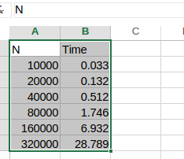

Lab 5 - Analysis of Algorithms
On competing the lab you will:
- Know how to apply Scientific Method to analyse an algorithm.
- Empirically derive an equation to estimate the running time of an algorithm.
- Using tilda notation, derive a mathematical cost model for the running time of an algorithm
Eclipse: Implement Sorter Class
Implement a sorting algorithm and use the scientific method to predict it's running time

Create Eclipse Project
- Create a new project called lab6.
- Create a package called lab6.
Add stdlib jar to the project
- Create a folder called lib in your project folder.
- Download the stdlib-package jar from here and copy to the lib folder.
- Select the jar file, then right click and select Build Path -> Add to Build Path.
Create Class
- Create a class called Sorter and add the following method:
public static int[] doSort(int[] a){
for (int i = 0; i < a.length - 1; i++)
{
int index = i;
for (int j = i + 1; j < a.length; j++)
if (a[j] < a[index])
index = j;
int smallerNumber = a[index];
a[index] = a[i];
a[i] = smallerNumber;
}
return a;
}We want to make some observations of running time for the doSort(...) method. To do this we need a way to produce integer arrays to use and the input parameter for the doSort(..) method. Add the following method to the Sorter class:
public static int[] generateIntArray(int n) {
Random rand = new Random();
int [] array = new int[n];
for (int i=0;i<n;i++)
array[i]=rand.nextInt();
return array;
}Finally, create the following main method that can execute the algorithm for randomised integer arrays of various sizes:
public static void main(String[] args) {
int[] a = generateIntArray(10000);
Stopwatch stopwatch = new Stopwatch();
doSort(a);
double time = stopwatch.elapsedTime();
System.out.println("elapsed time " + time);
}Make Some Observations
Now run the program for different size inputs. It's a good idea to plan your experiment. start with a size of 10,000 and double the input size for each subsequent run. Complete the following table with the running times.
| N | Time (seconds) |
|---|---|
| 10000 | ? |
| 20000 | ? |
| 40000 | ? |
| 80000 | ? |
| 160000 | ? |
| 320000 | ? |
Analyse the data
For this part you may want to use a spreadsheet application. Enter your recorded data into a spreadsheet and use the charting tool to plot the result.
The following are instructions for MS Excel:
- Enter your data in a new blank spreadsheet

- Now get the log values of the data. In the cell enter the following formula =log(A1, 2) where the first argument is the cell containing to the 1st input size value (N) and the second argument is the base (i.e. base 2)
- You can use the charting tool to "fit" an equation to the data. Select the data an click Insert->Scatter Chart
- Select/click on the data points and right cligk to bring up a menu. Select "inset Tr4end line. We want to use the Power law so select power as the regression/line type. Also, select "show equation". You may need to look up the help option in the spreadsheet appication you're using. You should end up with something resembling the following:
- You can now use the equation as the basis for your hypothesis for predicting running time of you algorithm. remember the power depends on the algorithm, the coefficient depends on the hardware, software etc. of the machine.
#
Hypothesis
Using the equation from the last section, predict the running time for an array of size 50,000. Then, run an experiment using your program to validate if your hypothesis is correct. It wont be exactly the same but should be close if your hypothesis is correct.
Birthday Problem
How likely is it that, in a group of people, at least 2 of them have the same birthday? Write a program that takes an integer N from the command line and generates a random sequence of integers between 0 and N – 1. Run experiments to validate the hypothesis that the number of integers generated before the first repeated value is found is $$sqrt(pi N/2)$$
Analytical Analysis
The following exercised will help you learn how to analyse your programs and code:
Initial Analysis
For each of the following algorithms, indicate: a) a natural size metric for its inputs; b) its basic operation; c) whether the basic operation count can be different for inputs of the same size.
- search for a key K in a list of n numbers
- computing the sum of n numbers
- computing n!(Factorial of n)
- finding the largest element in a list of n numbers
Mathematical Models and Tilda Notation
Refer to the code used previously in this lab:
public static int[] doSort(int[] a){
for (int i = 0; i < a.length - 1; i++)
{
int index = i;
for (int j = i + 1; j < a.length; j++)
if (a[j] < a[index])
index = j;
int smallerNumber = a[index];
a[index] = a[i];
a[i] = smallerNumber;
}
return a;
}- What is the problem size for this algorithm?
- Identify the "basic operation" in the algorithm. Remember from lectures, a basic operation is usually in the inner loop that runs the most number of times.
- Define a cost model that includes the basic operation(hint: number of array accesses). This should take the form C(N) = ...).
- Use tilda notation to simlpify the cost model.
Tilda Notation
Use tilda notation to simlify the following:
a. $$N + 1$$ d. $$2N^3 + 15 N 2 + N$$ b. $$1 + 1/N$$ c. $$(1 + 1/N )(1 + 2/N )$$ e. $$lg(2N )/lg N$$
Creative Exercises
Throwing eggs from a building: Suppose that you have an N-story building and plenty of eggs. Suppose also that an egg is broken if it is thrown off floor F or higher, and unhurt otherwise. Devise a strategy to determine the value of F such that the number of broken eggs is ~lg N when using ~lg N throws, then find a way to reduce the cost to ~2lg F.